Interior Trim
186 parts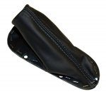
008 - 2003 - 2010 Dodge Viper SRT10 Blue Stitched Parking Brake Handle Boot - 0XP201BNAA
$125.00
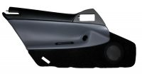
Out of stock1992 - 1995 Dodge Viper RT/10 Left Door Panel Trim With Bezel & Cup - 0HY61MXD
Part # 0HY61MXD
$500.00
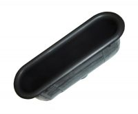
Out of stock1992 - 1996 Dodge Viper RT/10 Interior Door Pull Cup - 0EJ02LX9
Part # 0EJ02LX9
$75.00
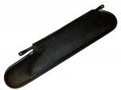
1992 - 1996 Dodge Viper RT/10 Left Visor - 0HS79LX7
$182.00
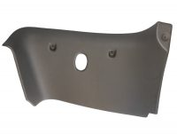
Out of stock1992 - 1996 Dodge Viper RT/10 Quartz Lower Right Dash Fascia Bolster - 0MJ80RD5
Part # 0MJ80RD5
$110.00

1992 - 1996 Dodge Viper RT/10 Right Outer Stanchion Cover - 0MS80RX8
Part # 0MS80RX8
$375.00
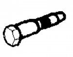
1992 - 1996, 2000 - 2001 Dodge Viper Upper Seat Belt Bolt - 06034459
$12.00
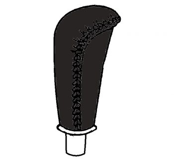
Out of stock1992 - 1998 Dodge Viper Black Shift Knob - 0HD42LX9
Part # 0HD42LX9
$176.00

1992 - 1998 Dodge Viper Blue Shift Knob - 0HD42SB4
Part # 0HD42SB4
$150.00

1992 - 1998 Viper Left Hand Door Handle Bezel - 0TT06DX9AA Dodge
Part # 0TT06DX9AA
$149.00

1992 - 1998 Viper Right Hand Door Handle Bezel - 0TT07DX9AA Dodge
Part # 0TT07DX9AA
$149.00

1992 - 2000 Dodge Viper Lighted Rear View Mirror Assembly - 04643256AC
$150.00
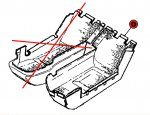
1992 - 2000 Dodge Viper RT/10 Right Front Carpet - 0QD06DX9AB
$605.00
1992 - 2001 Dodge Viper Inner Seat Belt Bolt - 06034457
Part # 6034457
$18.00
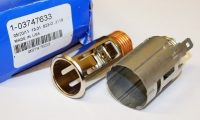
1992 - 2002 Dodge Viper Cigarette Lighter Power Outlet Shell - 3747633
Part # 3747633
$36.00
 Out of stock
Out of stock1992 - 2002 Dodge Viper Factory Drink Holder - 82204416
Part # 82204416
$39.99

1992 - 2002 Dodge Viper Interior Sill Cover Plug - 04848881AA
Part # 04848881AA
$19.95
 Out of stock
Out of stock1992 - 2002 Dodge Viper Left Interior Sill Cover - 0KS21DX9AC
Part # 0ks21dx9ac
$95.00
 Out of stock
Out of stock1992 - 2002 Dodge Viper Lumbar Support Inflation Bulb - 4874889
Part # 4874889
$150.00
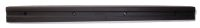
1992 - 2002 Dodge Viper Right Interior Sill Cover - 0KS20DX9AC
$60.00
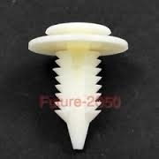
1992 - 2002 Dodge Viper Trim Panel Retainer 6503709
Part # 6503709
$2.95
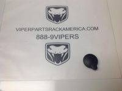
1992 - 2010 Dodge Viper Cigarette Lighter Outlet Cap - 04595522 56008852
Part # 56008852 4595522 53128244
$4.00
 Out of stock
Out of stock1992 - 2010 Dodge Viper Hex Nut / Coned Washer M6 x 1.00 - 06101447
Part # 6101447
$5.00
 Out of stock
Out of stock1992 - 2010 Dodge Viper M6.25x28 Retainer - 06500911
Part # 6500911
$7.00
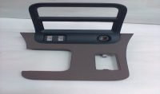
Out of stock1992-1995 Dodge Viper Bezel, Center Dash Instrument Panel 0HV33MD5
Part # 0HV33MD5
$400.00

1993 - 1995 Dodge Viper RT/10 Left Outer Seat Belt - 0HC77MX9
Part # 0HC77MX9
$41.00
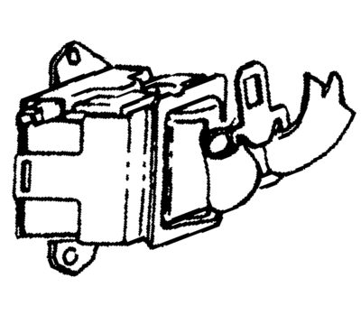
1993 - 1995 Dodge Viper RT/10 Right Outer Seat Belt - 0HC68MX9
$77.00
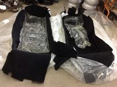
Out of stock1994 - 1995 Dodge Viper RT/10 Black Carpet Set - 0LJ94PX9 LJ95PX9
Part # 0LJ94PX9 LJ95PX9
$825.00
 Out of stock
Out of stock1994 - 2010 Dodge Viper Cigarette Lighter Assembly - 04685370
Part # 4685370
$22.00
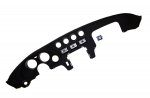
1996 - 1997 Dodge Viper Instrument Panel Fascia (Dash) - 0LB39SX4AB
$449.00

1996 - 1998 Dodge Viper Center Console in Black - 0PF25TX7
Part # 0PF25TX7
$999.00
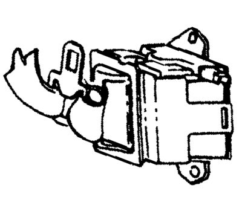
1996 - 2000 Dodge Viper Outer Seat Belt Assembly - 0PD74RX9
$146.00
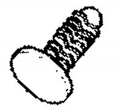
1996 - 2002 Dodge Viper Black Headliner Retainer - 0QK37SX9
Part # 0QK37SX9
$19.99
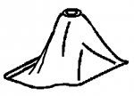
Out of stock1996 - 2002 Dodge Viper Black Shift Boot - 0PD67TX9
Part # 0PD67TX9
$135.00
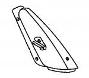
1996 - 2002 Dodge Viper GTS Left Inner Door Stanchion - 0ME69JX8AB
$150.00

1996 - 2002 Dodge Viper GTS Rear Glass Prop - 04763387AB
Part # 04763387AB
$40.00
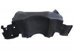
1996 - 2002 Dodge Viper GTS Upper Cargo Carpet - 0LC11DX9AC
Part # 0LC11DX9AC
$328.00
 Out of stock
Out of stock1996 - 2002 Dodge Viper Interior Fuse Box Cover - 04848773AB
Part # 04848773AB
$120.00
 Out of stock
Out of stock1996 - 2002 Dodge Viper Lower left Dash Fascia Bolster - 0QN71BX7AC
Part # 0QN71BX7AC
$625.00
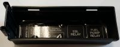
Out of stock1996 - 2002 Dodge Viper Rear Body Fuse Block Cover - 04848297
Part # 04848297
$30.00

1996 - 2002 Dodge Viper Seat Belt Guide - 0QE63SX9
Part # 0QE63SX9
$95.00
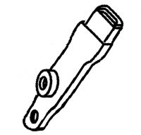
Out of stock1996 - 2002 Dodge Viper Seat Belt Receptacle - 04848718
Part # 04848718
$53.00

1996 - 2002 Viper SRT10 Lower Steering Column Shroud - 0KJ95JX8AB
Part # 0KJ95JX8AB
$92.00
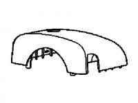
1996 - 2002 Viper SRT10 Upper Steering Column Shroud - 0DH69JX8AC
Part # 0DH69JX8AC
$68.00
1996 - 2010 Dodge Viper Spacer - 04643847
Part # 04643847
$1.00
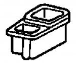
1997 - 2002 Dodge Viper Ash Tray - 0D221SX8
Part # d221sx8
$60.00
 Out of stock
Out of stock1997 - 2002 Dodge Viper GTS Right Interior B Pillar Trim Panel - 0ME68JX8AB
Part # 0ME68JX8AB
$150.00
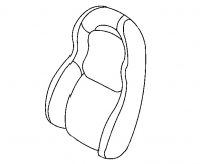
Out of stock1997 - 2002 Dodge Viper Left Side Seat Back - 0SN611X9AA
Part # 0SN611X9AA
$575.00
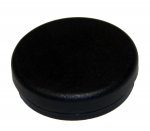
1997 - 2002 Dodge Viper RT/10 End Cap Lock Cover - 04848895AA
Part # 04848895AA
$22.00
 Out of stock
Out of stock1997 - 2002 Viper RT/10 Left Interior B Pillar Trim Panel - 0QB93JX8 DODGE
Part # 0QB93JX8
$175.00
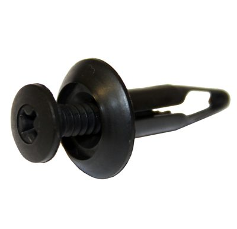
Out of stock1997 - 2010 Dodge Viper Phillips Head Retainer - 06502871
Part # 06502871
$5.50
 Out of stock
Out of stock1997 Dodge Viper Carmel Tan Shift Knob - 0HD421KA
Part # 0HD421KA
$72.00
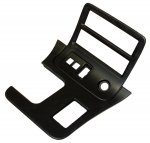
1998 - 2002 Dodge Viper GTS Center Radio Bezel in Black - 0KS79JX8AD ACR
$269.00

1998 - 2002 Dodge Viper RT/10 Instrument Panel Bezel - Used only - 0PK84JX8AD
$199.00
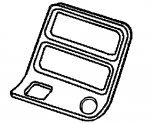
Out of stock1998 - 2002 Viper GTS Instrument Panel Bezel - 0KS79JX8AD Dodge
Part # 0KS79JX8AD
$269.00
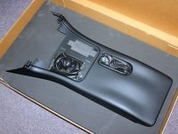
Out of stock1999 - 2002 Dodge Viper Center Console in Black - 0PF251X9AF
Part # 0PF251X9AF
$999.00
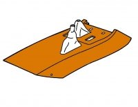
1999 - 2002 Dodge Viper Center Console in Cognac - 0PF251XUAF
Part # 0PF251XUAF
$500.00
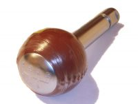
Out of stock1999 - 2002 Dodge Viper Cognac Shift Knob - 0SG08WUCAA
Part # 0SG08WUCAA
$295.00
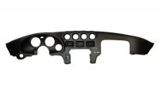
1999 - 2002 Dodge Viper Instrument Panel Fascia (Dash) - 0LB39JX8AG
Part # 0LB39JX8AG
$493.00

1999 - 2002 Dodge Viper Steering Wheel in Black - 0PB41SX9
Part # 0PB411UC
$749.00
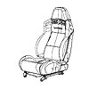
Out of stock2003 - 2006 Dodge Viper Passenger Seat, Black
$1,467.00

2003 - 2006 Dodge Viper SRT 10 Right interior Door Panel in BLUE - 0XC921BNAB
Part # 0XC921BNAB
$899.99

2003 - 2006 Dodge Viper SRT10 Left Outer Door Belt Weatherstrip - 04865585AD
Part # 4865585AD
$70.00

2003 - 2006 Dodge Viper SRT10 Right Outer Door Belt Weatherstrip - 04865584AD
Part # 4865584AD
$70.00
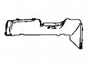
2003 - 2006 Dodge Viper SRT10 Steering Column Cover Panel - 0XT29DX9AB
Part # 0XT29DX9AB
$688.00

2003 - 2009 Dodge Viper SRT10 Right Door Panel Trim With Door Lock Switch And Door Handle Switch
$1,105.00
 Out of stock
Out of stock2003 - 2010 Dodge Viper Alarm Indicator Lamp 05029051AB
Part # 05029051AB
$48.00

2003 - 2010 Dodge Viper Left Side Sill Foam Isolator - 05029719AA
Part # 5029719AB
$25.00

2003 - 2010 Dodge Viper PDC Heat Shield 05029117AF
Part # 05029117AF
$15.00
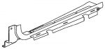
2003 - 2010 Dodge Viper Right Door Surround Panel 04865888AD
$295.00
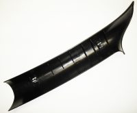
2003 - 2010 Dodge Viper Roadster Windshield Garnish Molding - 0TR82RXFAB
Part # 0TR82RXFAB
$80.00

2003 - 2010 Dodge Viper SRT10 Aluminum Shift Boot Mounting Ring - 05093230AA
Part # 05093230AA
$181.00
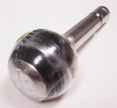
2003 - 2010 Dodge Viper SRT10 Black Factory Shift Knob - 0SG081X9AA
Part # 0SG081X9AA
$195.00

2003 - 2010 Dodge Viper SRT10 BLACK Stitched Shift Boot - 0XP191X9AA
Part # 0XP191X9AA
$99.99
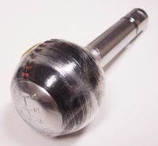
Out of stock2003 - 2010 Dodge Viper SRT10 Black With Red Stitching Factory Shift Knob - 0SG081R1AA
Part # 0SG081R1AA
$74.00
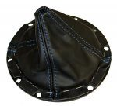
2003 - 2010 Dodge Viper SRT10 Blue Stitched Shift Boot - 0XP191BNAA
$75.00
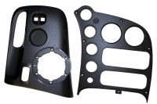
Out of stock2003 - 2010 Dodge Viper SRT10 Carbon Fiber Center Bezels -
Part # 82208992
$525.00
 Out of stock
Out of stock2003 - 2010 Dodge Viper SRT10 Center Console, Lid, Latch, & Mat - 1JX801D5AA
Part # 1JX801D5AA
$330.00

2003 - 2010 Dodge Viper SRT10 Dash Panel Right Heat Shield - 05029318AA
Part # 5029318AA
$38.00
Out of stock
2003 - 2010 Dodge Viper SRT10 Floor Mats w/ Blue Logos - 05030354AA
Part # 05030354AA
$133.00
Out of stock
2003 - 2010 Dodge Viper SRT10 Floor Mats w/ Blue Logos - 05030449AA
Part # 05030449AA
$103.00
Out of stock
2003 - 2010 Dodge Viper SRT10 Floor Mats w/ Orange Logos - 05030448AA
Part # 05030448AA
$127.00
 Out of stock
Out of stock2003 - 2010 Dodge Viper SRT10 Inner Door-Window Weatherstrip Right - 4865578AE
Part # 4865578AE
$125.00
 Out of stock
Out of stock2003 - 2010 Dodge Viper SRT10 Inside Rearview Mirror - 05029067AB
Part # 5029067AB
$59.00

2003 - 2010 Dodge Viper SRT10 Interior Door Lock Switch - 04685435
$39.00

2003 - 2010 Dodge Viper SRT10 Left Interior Door Panel in Blue - 0XC871BNAC
$895.99
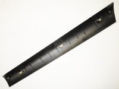
2003 - 2010 Dodge Viper SRT10 Left Interior Sill Cover - 0TR89DX9AD
Part # 0TR89DX9AD
$140.00
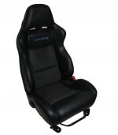
Out of stock2003 - 2010 Dodge Viper SRT10 Passenger Seat w/ Blue Stitching - 1CP301XBAC
Part # 1CP301XBAC
$1,045.00
 Out of stock
Out of stock2003 - 2010 Dodge Viper SRT10 RED Factory Shift Knob - 0SG08SR1AA
Part # 0SG08SR1AA
$149.00
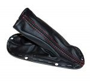
Out of stock2003 - 2010 Dodge Viper SRT10 Red Stitched Parking Brake Handle Boot - 0XP201XRAA
Part # 0XP201XRAA
$103.00
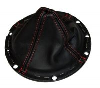
2003 - 2010 Dodge Viper SRT10 Red Stitched Shift Boot - 0XP191XRAA
Part # 0XP191XRAA
$139.00
Out of stock
2003 - 2010 Dodge Viper SRT10 Right Bulkhead Cover - 0XK36DX9AA
Part # 0XK36DX9AA
$25.00
 Out of stock
Out of stock2003 - 2010 Dodge Viper SRT10 Right Interior Door Panel in Red - 0XC921XRAC
Part # 0XC921XRAC
$980.00
 Out of stock
Out of stock2003 - 2010 Dodge Viper SRT10 Right Interior Sill Cover - 0TR88DX9AD
Part # 0TR88DX9AD
$85.00

2003 - 2010 Dodge Viper SRT10 Roadster Bulkhead Panel - 0TS04DX9AB
Part # 0TS04DX9AB
$895.00
2003 - 2010 Dodge Viper SRT10 Seat Back with Red Stitching - 0XD051XRAA
Part # 0XD051XRAA
$275.00
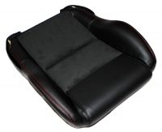
Out of stock2003 - 2010 Dodge Viper SRT10 Seat Base with Red Stitching - 1HX571XRAA
Part # 1HX571XRAA
$365.00
 Out of stock
Out of stock2003 - 2010 Dodge Viper SRT10 Silver Center Bezels - 82209808
Part # 82209808
$510.00

2003 - 2010 Dodge Viper SRT10 Steering Wheel with Red Stitching - 0TQ901R1AA
Part # 0TQ901R1AA
$485.00
 Out of stock
Out of stock2003 - 2010 Dodge Viper SRT10 Trunk Carpet Kit - 82206654AC
Part # 82206654AC
$999.99
 Out of stock
Out of stock2003 - 2010 Dodge Viper SRT10 Trunk FRONT WALL Carpet ROADSTER - 05029835Ac
Part # 05029835Ac
$48.00
Out of stock
2003 - 2010 Dodge Viper SRT10 Yellow Stitched Parking Brake Handle Boot - 0XP201YRAA
Part # 0XP201YRAA
$122.00
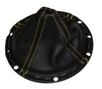
Out of stock2003 - 2010 Dodge Viper SRT10 Yellow Stitched Shift Boot - 0XP191YRAA
Part # XP191YRAA
$120.00
 Out of stock
Out of stock2003 - 2010 Dodge Viper Steering Wheel BACK COVER in Black - 0TQ91DX9AA
Part # 0TQ91DX9AA
$10.00
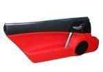
Out of stock2003 - 2010 Viper SRT10 Left Interior Door Panel in Red - 0XC871XRAC Dodge MAMBA
Part # 0XC871XRAC
$775.00
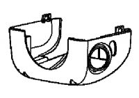
Out of stock2003 - 2010 Viper SRT10 Lower Steering Column Shroud - 0UC78DX9AA
Part # 0UC78DX9AA
$18.00

2003 - 2010 Viper SRT10 Upper Steering Column Shroud - 0UC77DX9AA
$27.00

2003 - 2013 Dodge SRT Viper Heater Floor Duct - 04865809AA
Part # 4865809AA
$15.00

2003 - 2016 Dodge SRT Viper Stainless Sill Protectors - 82208805AB
Part # 82208805AB
$214.00

2003-2010 Dodge Viper SRT10 Speaker Grill Dash Left Tweeter 0TV67DX9AA
Part # 0TV67DX9AA
$39.00

2003-2010 Dodge Viper SRT10 Speaker Grill Dash Right Tweeter 0TV68DX9AA
Part # 0TV68DX9AA
$29.00

2003-2016 Dodge Viper SRT10 Ashtray Assembly - 05108051AA
Part # 05108051AA
$47.00
Out of stock
2005- 2010 Dodge Viper SRT10 Gloss Black Center Bezels - MOPAR ACCESSORY
Part # 82209809
$499.00

2006 - 2010 Dodge Viper SRT10 Console Shift Ring Hex Socket Screw - 5093298AA
Part # 5093298AA / 6036430AA
$8.49

2006 - 2010 Dodge Viper SRT10 Coupe Bulkhead Panel - 1BH89DX9AC
Part # 1BH89DX9AC
$585.00

2006 - 2010 Dodge Viper SRT10 Coupe Liftgate Courtesy Lamp Wiring - 05030303AB
Part # 05030303AB
$20.00
2008 - 2013 Dodge SRT Viper Mirror Switch - 04608505AF
Part # 04608505AF
$39.00
2008 Dodge Viper SRT Black With TAN Stitching Shift Knob - 0SG081U4AA
Part # 0SG081U4AA
$215.00

2010 Dodge Viper SRT10 Inner Door / Window Weatherstrip Left - 4865579AE
Part # 4865579AE
$118.00

2013 SRT Viper GTS Black Shift Knob - 1ZV76DX9AA
Part # 1ZV76DX9AA
$280.00

Prowler Interior Door Cup Pull - 0HE36LAZAB
Part # 0HE36LAZAB
$43.75
 Out of stock
Out of stockUSED 1997 - 2010 Dodge Viper Door Speaker Grill - 0SL12DX9AA
Part # 0SL12DX9AA
$50.00

03-10 VIPER BEZEL, CENTER I/P,RADIO 0XT23DX9AA
$325.99
03-10 VIPER CENTER CONSOLE BASE 1JX801D5AA
$675.00
1992 - 1995 Dodge Viper Gray Left Hand Door Handle Bezel - 0EK03LD5
$149.00
1992 - 1996 Dodge Viper RT/10 Right Visor - 0HS76LX7
$182.00
1992 - 2002 Dodge Viper Lumbar Support Inflation Bulb - 4874889 BULB ONLY
$49.00
1992-2002 Viper GTS RT10 Fuel Access Close Out Panel Mopar Part 4848582AB
Part # 4848582AB
$600.00
1996 - 1997 Dodge Viper GTS Center Radio Bezel in Black - 0KS79MX4AB
$550.00
1996 - 2002 Dodge Viper GTS RIGHTt Inner Door Stanchion - 0ME68JX8AB
$150.00
Out of stock1996 - 2002 Dodge Viper Seat Base & Cushion - 0SN591X9AA
Part # 0SN591X9AA
$937.00
1997 - 2002 Viper RT/10 Right Interior B Pillar Trim Panel - 0QB92JX8 Dodge
$296.00
1997 - 2010 Dodge Viper Door Speaker Grill - 0SL12DX9AA
$90.00
1998 - 2002 Dodge Viper Interior Single Gang Window Switch - 04685434
$100.00
1999 - 2002 Dodge Viper Right Windshield Visor - 0SE32DX9AC
Part # 0SE32DX9AC
$134.00
Out of stock2003 - 2009 Dodge Viper SRT10 Left Door Panel Trim With Door Lock Switch And Door Handle Switch
Part # 0XC871X9AC
$649.00
2003 - 2009 Dodge Viper SRT10 Left Interior Door Panel - 0XC871X9AC
$1,195.00
2003 - 2009 Dodge Viper SRT10 Right Door Panel Trim - 0XC921X9AC
$1,105.00
2003 - 2010 Dodge Viper Front Left Seat Belt Assembly - 0UB651X9af
$100.00
2003 - 2010 Dodge Viper Right Cowl Side Trim Panel - 0UR52DX9AA
Part # 0UR52DX9AA
$18.00
2003 - 2010 Dodge Viper Right Seat Belt Assembly - 1BD961X9AA
$50.00
Out of stock2003 - 2010 Dodge Viper SRT Instrument Dash Bezel 0WA87DX9AA
Part # 0WA87DX9AA
$490.00
2003 - 2010 Dodge Viper SRT Left Door Grab Handle Polished Mopar Part 0UA37SZ6AA
$150.00
2003 - 2010 Dodge Viper SRT Right Door Grab Handle Polished Mopar Part 0UA36SZ6AA
Part # 0UA36SZ6AA
$50.00
Out of stock2003 - 2010 Dodge Viper SRT10 Custom Leather Center Console w/ Red Stitching
Part # 1JX801D5AA
$825.00
Out of stock2003 - 2010 Dodge Viper SRT10 Driver Seat w/ Blue Stitching - 1CP311XBAC
Part # 1CP311XBAC
$1,045.00
Out of stock2003 - 2010 Dodge Viper SRT10 Driver Seat w/ Tan Stitching - 1CP311U4AC
Part # 1CP311U4AC
$1,045.00
2003 - 2010 Dodge Viper SRT10 Floor Mats w/ Yellow VCA Logos 5030134AA
$149.00
2003 - 2010 Dodge Viper SRT10 Interior Window Switch - 04608633AD
Part # 04608633AD
$88.00
2003 - 2010 Dodge Viper SRT10 Left Bulkhead Cover - 0XK37DX9AA
$25.00
Out of stock2003 - 2010 Dodge Viper SRT10 Left Visor Assembly - 0UZ111X7AD
Part # 0UZ111X7AD
$52.00
Out of stock2003 - 2010 Dodge Viper SRT10 Passenger Seat w/ Black Stitching - 1CP301X9AD
Part # 1CP301X9AD
$1,045.00
Out of stock2003 - 2010 Dodge Viper SRT10 Right Visor Assembly - 0UZ101X7AD
Part # 0UZ101X7AD
$52.00
2003 - 2010 Dodge Viper SRT10 Roadster Bulkhead Rear Panel Trim 5029072AB
$700.00
2003 - 2010 Dodge Viper SRT10 Roadster Slingwell Carpet - 0TU06VXLAB
Part # 0TU06VXLAB
$219.00
2003 - 2013 Dodge SRT Viper Push Button Start Switch - 04865676AC
$59.00
2003 -2006 Black Bezels Console GEN 3 / 4 2003 2004 2005 2006
$239.00
2003-2004 Dodge Viper Lighter, Knob and Element
$5.00
2004 2008 Dodge Viper SRT10 Gauge Pac Mopar Part 5029636AA
Part # 5029636AA
$621.00
Out of stock2006 - 2010 Dodge Viper SRT10 Coupe Left B Pillar Cover - 1BK25DX9AC
Part # 1BK25DX9AC
$64.00
2006 - 2010 Dodge Viper SRT10 Coupe Liftgate Cover Trim Mopar Part 1BY68DX9AD
$15.00
2006 - 2010 Dodge Viper SRT10 Coupe Rear Slingwell Carpet - 1BK20VXLAC
Part # 1BK20VXLAC
$358.00
2006 - 2010 Dodge Viper SRT10 Coupe Right B Pillar Cover - USED ONLY - 1BK24DX9AC
Part # 1BK24DX9AB
$175.00
92 - 98 VIPER GROMMET SPORT CAP PAD 04643927 RT/10
Part # 04643927
$20.00
Out of stock92-95 VIPER BLACK OEM FACTORY STEERING WHEEL, BARE NEW! 04642736
Part # 04642736
$525.00
92-95 VIPER RED OEM FACTORY STEERING WHEEL, BARE NEW! 04642736
$525.00
92-96 Steering wheel horn BUTTON.
Part # 04642738
$175.00
93-96 DODGE VIPER RH PASSENGER DOOR PANEL TAN & BLACK 0LC42PKA
$495.00
94-96 VIPER DRIVERS LH DOOR PANEL TA 0JW33MKA
$575.00
96 - 02 VIPER GTS RH QUARTER TRIM FRONT LWR 0PS121X7AD 0QL02TRMAE
$295.00
Out of stock96-02 Dodge Viper Drivers/Left Air bag (textured finish found in 98-02) 0LB45JX8AB
Part # 0LB45JX8AB
$2,100.00
96-02 VIPER GTS LH DRIVER QUARTER TRIM PANEL, UPPER 0QK43BX7AB
$295.00
96-02 VIPER GTS REAR BULKHEAD TRIM PANEL 0LC07BX7AD
$550.00
96-02 VIPER GTS RH UPPER QUARTER TRIM PANEL, UPPER 0QK42BX7AB
$295.00
Out of stock96-02 VIPER GTS SPARE TIRE COVER, BLACK CARPETED, 0LB98SX9AB
Part # 0LB98SX9AB
$175.00
97-02 Dodge Viper RT/10 Hardware Cover for Convertable 04848902AA
Part # 04848902AA
$7.75
97-02 VIPER SPEAKER (DOOR MOUNT) 04763072AB
$35.00
98 - 02 VIPER BULKHEAD T-PANEL RT-10 0QB891X7AC
$995.00
98 VIPER GT2 BLUE CENTER CONSOLE OPF251XB, 96-02
$499.99
98-02 VIPER GTS ACR CENTER WATERFALL (TPANEL) WITH ACR BELT OPTIONS 0LC171XBAD
$995.00
98-02 VIPER GTS BULKHEAD T-PANEL WATERFALL 0LC171X7AE
$895.00
Out of stockCargo Tray Kit
$252.00
Out of stockCarpet, Trunk, Front Wall
$80.00
Out of stockHeadliner Coupe
$1,262.00
Hydrographic Bezels Console
$329.00
Out of stockPatches-'B' Pillar Left
$14.00